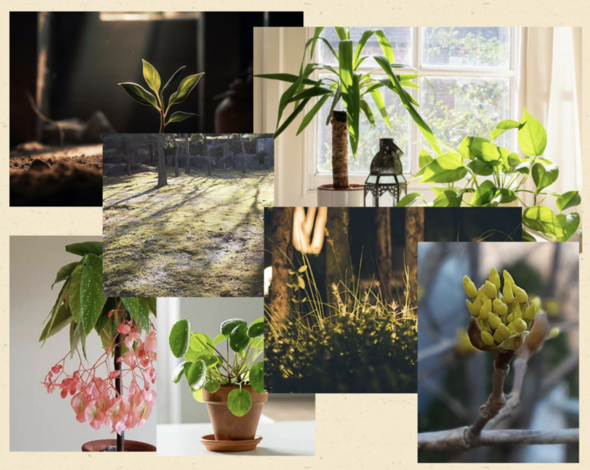

Photo Collage
For the photo collage, we were supposed to make a collage using our own photos we took and the ones we find on the internet. I took the two photos in the center. My photo collage is based on this sentence found in my textbook: “The sad room smiles again when a pot of green is placed on a white tablecloth.” I wanted to find photos that had a simple background and lighting that made it look as if the plant is the room’s savior to its boringness.